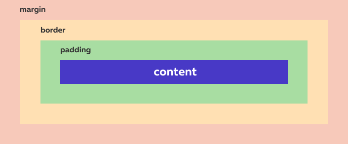
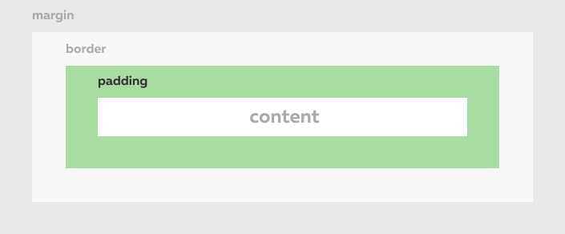
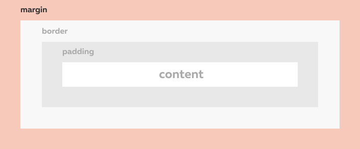
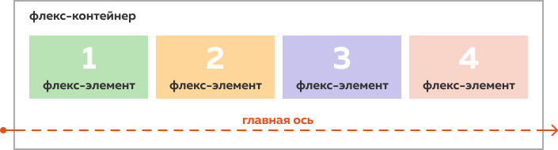
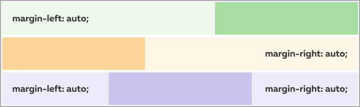

Конспект «Сетки»
Бокс
Каждому тегу на странице соответствует прямоугольная область, которая называется боксом (от английского box — «коробка»).
Бокс состоит из содержимого (content), внутренних отступов (padding), рамки (border) и внешних отступов (margin):
То, как бокс выглядит на странице, во многом зависит от его типа (или от типа его родителя).
Блочные боксы на странице начинаются с новой строки и растягиваются на всю ширину родительского элемента. Блочный тип по умолчанию имеют, например, теги <p>, <div> и <h1>.
Строчные боксы располагаются друг за другом на одной строке, а их ширина зависит от их содержимого. По умолчанию строчными боксами являются, например, теги <a>, <span> и <b>.
Поток, сетки и макет
То, как боксы взаимодействуют друг с другом и в каком порядке располагаются на странице, называется потоком. Потоком можно управлять, изменяя тип боксов и свойства по умолчанию.
Сеткой называют расположение крупных боксов на странице. К таким боксам обычно относят шапку, подвал сайта, основное (<main>) и дополнительное (<aside>) содержимое, различные секции и разделы. Как правило, количество сеточных элементов на странице не меняется, а их размеры задаются согласно макету.
Макет — это изображение веб-страницы. Его создаёт дизайнер, а веб-разработчик использует его как образец при вёрстке.
Свойство padding
Внутренним отступом называют расстояние между содержимым бокса и рамкой.
Внутренние отступы у элемента создают с помощью свойства padding. Если внутренние отступы одинаковы со всех сторон, то достаточно написать так:
.element {
padding: 15px;
}
Такую запись называют краткой.
Если отступы с разных сторон различаются, то используют полную запись, указывая внутренний отступ отдельно для каждой стороны:
.element {
padding-top: 5px;
padding-right: 10px;
padding-bottom: 15px;
padding-left: 20px;
}
Свойство padding-top создаёт внутренний отступ сверху, padding-right — справа, padding-bottom — снизу, а padding-left — слева.
Свойство margin
Внешним отступом называют отступ от внешней границы элемента до границ родительского элемента или до соседних элементов.
Чтобы управлять внешними отступами, используют свойство margin. У него, как и у padding, есть краткая и полная записи.
// Краткая запись margin: 20px; // Полная запись margin-top: 0; margin-right: 5px; margin-bottom: 10px; margin-left: 15px;
Свойство margin-top создаёт внешний отступ сверху, margin-right — справа, margin-bottom — снизу, а margin-left — слева.
Свойство display
За тип бокса в CSS отвечает свойство display. У этого свойства больше десятка возможных значений, все они перечислены в спецификации.
display: grid;
Grid
Бокс с типом grid называют грид-контейнером, а дочерние, то есть непосредственно вложенные в него теги — грид-элементами.
Хотя снаружи (для других элементов, например основного содержимого) грид-контейнер ничем не отличается от блочного бокса, грид-элементы внутри него ведут себя иначе. Например, даже строчные боксы начинают занимать всю доступную им область. Кроме того, в грид-контейнере по-другому ведут себя внешние отступы у элементов.
По умолчанию грид-контейнер одноколоночный. Чтобы это изменить, нужно описать шаблон грид-контейнера. Для этого используют свойство grid-template-columns:
.grid-container {
display: grid;
grid-template-columns: 100px 150px 80px;
}
Существуют и другие свойства для описания шаблона грид-контейнера. Например, grid-template-rows и grid-template-areas.
Если элементов в грид-контейнере больше, чем колонок, то следующие элементы автоматически переносятся на новую строку, или ряд, и так же разделяются на колонки.
fr
fr (сокращённое от fraction — «доля») — особая единица измерения. Она означает долю доступного пространства в грид-контейнере.
.grid-container {
display: grid;
grid-template-columns: 1fr 2fr;
}
Грид-контейнер в примере будет поделён на 3 равные части. Первая колонка получит одну часть ширины грид-контейнера, а вторая колонка — две части. Как бы ни изменялась ширина контейнера, пропорции колонок всегда будут одинаковыми.
fr можно использовать и вместе с пикселями. Например, вот так можно создать сетку, где правая колонка имеет фиксированную ширину 200px, а левая занимает всё оставшееся пространство:
.grid-container {
display: grid;
grid-template-columns: 1fr 200px;
}
Свойство gap
Свойство gap задаёт расстояние между грид-элементами, но не влияет на расстояние между элементами и контейнером. Сравните:
Свойство gap добавляется грид-контейнеру, в то время как margin — элементам.
С помощью gap отступы можно указать отдельно по вертикали и по горизонтали: column-gap отвечает за расстояние между колонками, а row-gap — за расстояние между рядами.
.grid-container {
column-gap: 15px;
row-gap: 5px;
}
Если же отступы одинаковы, удобно использовать составное свойство gap:
.grid-container {
gap: 20px;
}
Flex
Чтобы использовать особые свойства флексов (от английского flexible — «гибкий»), нужно с помощью display изменить тип элемента:
display: flex;
Бокс с типом flex называют флекс-контейнером, а его дочерние боксы — флекс-элементами.
Флекс-элементы автоматически выстраиваются вдоль главной оси. По умолчанию она направлена слева направо.
По умолчанию флекс-элементы не переносятся на новую строку и ужимаются до содержимого. Из-за этих особенностей сеточным флекс-элементам лучше всегда явно прописывать ширину.
По умолчанию все флекс-элементы имеют одинаковую высоту, подстраиваясь под самый высокий элемент в ряду. Самый простой способ выровнять отдельный элемент по нижней границе — добавить ему автоматический внешний отступ сверху. В этом случае флекс-элемент уменьшит свою высоту под содержимое и прижмётся к низу родительского контейнера.
Свойство justify-content
justify-content — свойство флекс-контейнера, которое говорит, как расположить флекс-элементы на главной оси.
У него может быть несколько значений:
flex-start— флекс-элементы располагаются в начале главной оси (по умолчанию — слева);flex-end— флекс-элементы располагаются в конце главной оси (по умолчанию — справа);center— флекс-элементы располагаются в центре главной оси;space-around— свободное пространство распределяется вокруг флекс-элементов;space-between— свободное пространство распределяется между флекс-элементами, при этом первый и последний элемент прижимаются к краям флекс-контейнера.
Свойство width
Чтобы указать ширину элемента, используют свойство width:
width: 550px;
По умолчанию свойство width задаёт ширину содержимого бокса (content) и не учитывает внутренние отступы и ширину рамки.
.box {
width: 100px;
padding-left: 20px;
padding-right: 30px;
border: 5px solid black;
}
В этом случае полная ширина бокса окажется 160px, потому что ширина содержимого сложится с шириной отступов и рамок: 100px + 20px + 30px + 5px + 5px (рамка справа и слева).
Выравнивание по центру
В вёрстке часто требуется расположить элемент по центру, или, как говорят разработчики, отцентровать элемент. Для этого требуется:
- указать элементу ширину, которая меньше ширины родительского элемента;
- задать элементу автоматические внешние отступы справа и слева.
.element {
width: 550px;
margin-right: auto;
margin-left: auto;
}
Это удобный трюк, но работает он с оговорками. Во-первых, таким образом не получится выровнять строчные боксы. Во-вторых, в блочном боксе (в отличие от флекс-контейнера) подобным образом можно выровнять элемент только по горизонтали.
Автоматические внешние отступы
У margin может быть значение auto. Например:
margin-left: auto;
Это значение говорит браузеру самому рассчитать размер внешнего отступа. Браузер выделяет под отступ всё свободное пространство в родительском контейнере. Так что если указать автоматический внешний отступ слева, то элемент прижмётся к правой границе родительского элемента.
Если автоматические внешние отступы заданы и справа и слева, то свободное пространство поделится между ними поровну. В итоге элемент расположится прямо по центру.
В блочном боксе автоматические внешние отступы сверху и снизу работают так же, как если бы их сделали равными 0. Но во флекс-контейнере они позволяют сдвинуть флекс-элемент к верхней или нижней границе. Или даже отцентровать элемент по вертикали, если задать верхний и нижний отступ одновременно.
Если указать для margin два значения, то первое применится к внешним отступам по вертикали, а второе — к внешним отступам по горизонтали.
margin: 0 auto;
Краткую запись с двумя значениями часто используют, когда требуется отцентровать элемент. Однако в других ситуациях лучше к ней не прибегать, так как это ухудшает читаемость кода.